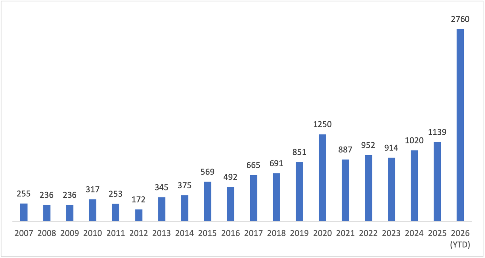

昔から「ソフトウェアのバージョンは最新にすべし」と言われたけど...

今回は Bruce Schneier 氏の記事経由で，以下を起点に話を始めようか。

- Why this month's Microsoft patch release is a doozy
- Security gnomes are pumping out patches ahead of an expected onslaught of AI-assisted attacks.
Powered by linkcard
先週の，いわゆる Patch Tuesday で Microsoft Update による脆弱性の修正が約972件にのぼり，そのうちの112件が深刻なものとして計上されている。 年単位の集計でも，今年の報告数が（現時点で既に）ダントツらしい。

こうした脆弱性報告の急増は，ソフトウェアが急にポンコツになったわけではなく，最近の「AI 支援型攻撃（AI-assisted attacks）」が関係しているようだ。
Two weeks ago, OpenAI, Anthropic, Amazon Web Services, Google, Microsoft, and 100 companies and organizations published an open letter warning of a narrowing window for patching vulnerabilities ahead of an expected tsunami of AI-enabled attacks that actively exploit them first. The industry is taking the threat seriously by pumping out unprecedented numbers of patches in their software.
攻撃される前に穴を塞ぐのは正しい。 問題は発見する穴の数と穴を塞ぐまでの猶予期間だろう。 当然ながら（規模的に）人間の手には負えないので，防御する方も AI による支援を受けて対応する。 これが脆弱性報告が急増した理由らしい。
Bruce Schneier 氏はこれを
This is the result of AI-powered vulnerability finding, and a good example of AI helping the defenders more than the attackers.
と肯定的に評価している。
一方で，攻撃側はパッチ情報を解析して利用できる。 これも AI により効率化されていると思われる。
And Microsoft is right: The window to patch has shrunk to “immediately.” AIs are also good at reverse-engineering exploits from patches, which means that these vulnerabilities will be weaponized as soon as the update is published.
個人ユーザはともかく，組織的に Windows を利用している場合は，パッチが出てもすぐに適用できないことが多い。 しかし，攻撃側が AI 支援型攻撃で迅速に脆弱性を突いてくるのであれば，防御側もそのスピードに対応しなければならない。
Kagi Assistant に件の記事を読み込ませたところ，以下を提言してきた。
- パッチ公開後の検証期間を短縮する必要がある。
- インターネットから到達可能なシステムを最優先で更新する必要がある。
- パッチ適用が間に合わない場合は，サービス停止，アクセス制限，仮想パッチ，監視強化などの代替策が必要になる。
- 「深刻度が高いか」だけでなく，「パッチ公開後に攻撃コードが作られやすいか」を考慮する必要がある。
- パッチ適用を定期的な保守作業ではなく，攻撃開始前の緊急対応として扱う必要がある。
情シスな方々は，この状況をどう考えているだろうか。 一朝一夕にはいかないと思うのだけど，先延ばしにできる話でもないだろう。
ここからは余談。
最近 Anthropic 社の CEO が AI 開発スピードを減速すべきとか言ってるらしいが（そして米国の大手 IT 企業が賛同している）
ぶっちゃけ「おまえがゆーな！」という感じである。 Anthropic 社をはじめとする米国大手 AI 企業に対しては，まず自社の AI サービスのやらかしに対してちゃんとペナルティを支払わせろよ。 話はそれからだっちうの。
しかもこの「提案」に対してかの大統領は
一方、トランプ大統領はロイター通信などの取材に対して、「多くの非常に否定的な勢力が、実現しないであろうAIについての事柄を持ち出している」と主張。中国とのAI開発競争を踏まえ、米国が同分野で先行する状況を維持したいとの考えを示した。
などと言ってるらしい。 つまり自国企業の野放図な状況を放置する気満々ということである。
ホンマ，この「ならずもの国家1」をどうにかしてくれよ！ つか，とっとと AI バブル弾けてくれ！ グラボが100万円とかありえねーよ。
参考

- セキュリティはなぜやぶられたのか
- ブルース・シュナイアー (著), 井口 耕二 (翻訳)
- 日経BP 2007-02-15
- 単行本
- 4822283100 (ASIN), 9784822283100 (EAN), 4822283100 (ISBN)
- 評価
[Comment] 原書のタイトルが “Beyond Fear: Thinking Sensibly About Security in an Uncertain World” なのに対して日本語タイトルがどうしようもなくヘボいが中身は名著。とりあえず読んどきなはれ。ゼロ年代当時 9.11 およびその後の米国のセキュリティ政策と深く関連している内容なので，そのへんを加味して読むとよい。

- ハッキング思考 強者はいかにしてルールを歪めるのか、それを正すにはどうしたらいいのか
- 富裕層、権力者、急成長企業はシステムをハッキングして成功した。AI時代にルールを味方につけるには、「正しいハッキングの考え方」が必要だ。
- Release 2023-10-16
- 評価
[Comment] Kindle 版あり
Powered by linkcard

- ケアレス・ピープル - 株式会社 すばる舎 学び・成長・成功をあなたに
- ケアレス・ピープル詳細をご覧いただけます。
- Release 2026-07-03
- 評価
[Comment] 米国では某企業から圧力がかかってると聞いて紙の本を買ってみた
Powered by linkcard
-
ならずもの国家（rogue state）は1990年代の米国クリントン政権時代に用いられた表現で，北朝鮮やイランなど7ヶ国を指していた。後にこれは子ブッシュ政権（9.11 のときの政権）で「悪の枢軸」などと再定義されている。日本版 Wikipedia の記事には「日本の外務省は違法国家あるいは無責任国家と意訳している」とか書いてある。ホンマか？ クレイジーキャッツやがな（笑） まぁ「無責任国家」というなら，間違いなく米国現政権は rogue state だよな。 ↩︎